第 7 章
从静态到动态的绘图功能
本章共 12 个小节 · 画布、线、矩形、圆、椭圆、多边形、文字、动画、鼠标、trackbar
OpenCV 不只可以读取与处理图像，也能直接绘图。本章从 NumPy 画布开始，依次使用
line()、rectangle()、circle()、ellipse()、polylines()、
putText()，再扩展到动画、鼠标事件和滚动条互动。
7-1
创建画布
画布可以是 NumPy 创建的空白数组，也可以是 cv2.imread() 读取的图像。彩色画布使用三维数组，
形状通常为 (height, width, 3)，第三维仍然是 B、G、R 通道。
import cv2
import numpy as np
black = np.zeros((200, 300, 3), np.uint8)
white = np.ones((200, 300, 3), np.uint8) * 255
原书提醒绘图坐标采用 (x, y)，左上角是 (0, 0)，右下角接近 (width - 1, height - 1)。
这和数组索引 img[y, x] 的顺序不同，后续绘图函数都使用坐标点 (x, y)。
7-2
绘制直线
cv2.line() 从 pt1 绘制到 pt2。颜色参数使用 BGR 顺序，thickness 控制线宽，
lineType 可选 cv2.LINE_4、cv2.LINE_8 或 cv2.LINE_AA。
cv2.line(img, pt1, pt2, color, thickness=1, lineType=cv2.LINE_8)
程序实例 ch7_1.py：用直线绘制矩形边框
# ch7_1.py
import cv2
import numpy as np
img = np.ones((350, 500, 3), np.uint8) * 255
cv2.line(img, (1, 1), (300, 1), (255, 0, 0))
cv2.line(img, (300, 1), (300, 300), (255, 0, 0))
cv2.line(img, (300, 300), (1, 300), (255, 0, 0))
cv2.line(img, (1, 300), (1, 1), (255, 0, 0))
cv2.imshow("My Draw", img)
cv2.waitKey(0)
cv2.destroyAllWindows()
程序实例 ch7_2.py：在矩形内加入斜线
# ch7_2.py
import cv2
import numpy as np
img = np.ones((350, 500, 3), np.uint8) * 255
cv2.line(img, (1, 1), (300, 1), (255, 0, 0))
cv2.line(img, (300, 1), (300, 300), (255, 0, 0))
cv2.line(img, (300, 300), (1, 300), (255, 0, 0))
cv2.line(img, (1, 300), (1, 1), (255, 0, 0))
for x in range(150, 300, 10):
cv2.line(img, (x, 1), (300, x - 150), (255, 0, 0))
for y in range(150, 300, 10):
cv2.line(img, (1, y), (y - 150, 300), (255, 0, 0))
cv2.imshow("My Draw", img)
cv2.waitKey(0)
cv2.destroyAllWindows()
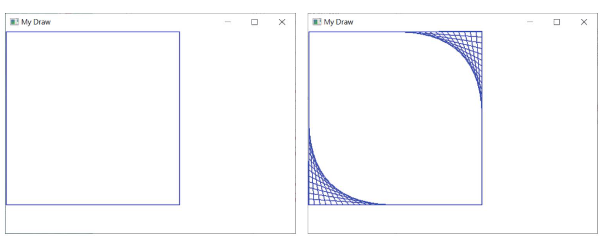
直线绘制矩形边框与斜线效果，参考原书第 7-3 到 7-4 页。
7-3
画布背景色彩
背景色可以用数组切片设置。因为 OpenCV 使用 BGR，黄色要写成 (0, 255, 255)。
程序实例 ch7_3.py：把矩形区域设置为黄色底
# ch7_3.py
import cv2
import numpy as np
img = np.ones((350, 500, 3), np.uint8) * 255
img[1:300, 1:300] = (0, 255, 255)
cv2.line(img, (1, 1), (300, 1), (255, 0, 0))
cv2.line(img, (300, 1), (300, 300), (255, 0, 0))
cv2.line(img, (300, 300), (1, 300), (255, 0, 0))
cv2.line(img, (1, 300), (1, 1), (255, 0, 0))
cv2.imshow("My Draw", img)
cv2.waitKey(0)
cv2.destroyAllWindows()
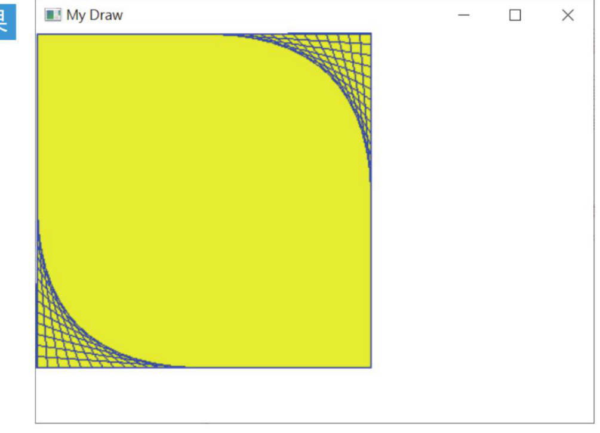
用数组切片建立黄色背景，参考原书第 7-5 页。
程序实例 ch7_4.py：使用图像作为画布
# ch7_4.py
import cv2
img = cv2.imread("antarctic.jpg")
cv2.line(img, (1, 1), (300, 1), (255, 0, 0), 3)
cv2.line(img, (300, 1), (300, 300), (255, 0, 0), 3)
cv2.line(img, (300, 300), (1, 300), (255, 0, 0), 3)
cv2.line(img, (1, 300), (1, 1), (255, 0, 0), 3)
cv2.imshow("My Draw", img)
cv2.waitKey(0)
cv2.destroyAllWindows()
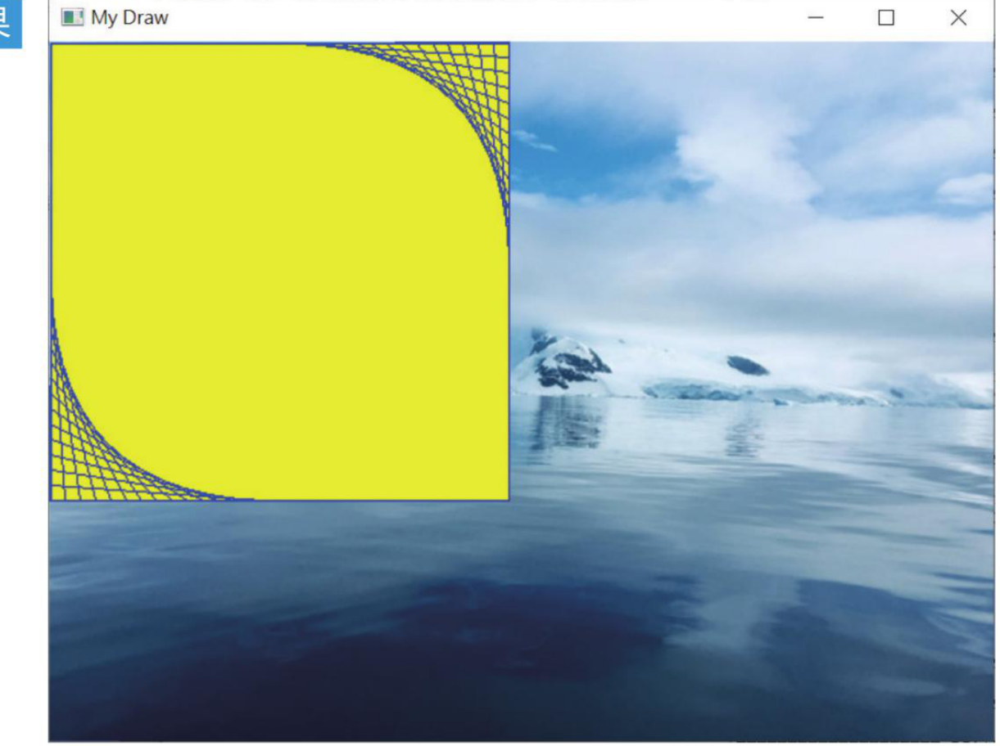
把 antarctic.jpg 当成绘图画布，参考原书第 7-5 页。
7-4
绘制矩形
cv2.rectangle() 用左上角和右下角两个点绘制矩形。thickness=-1 时会填满矩形内部。
cv2.rectangle(img, pt1, pt2, color, thickness)
程序实例 ch7_5.py：用 rectangle() 重写 ch7_2.py
# ch7_5.py
import cv2
import numpy as np
img = np.ones((350, 500, 3), np.uint8) * 255
cv2.rectangle(img, (1, 1), (300, 300), (255, 0, 0), 1)
for x in range(150, 300, 10):
cv2.line(img, (x, 1), (300, x - 150), (255, 0, 0))
for y in range(150, 300, 10):
cv2.line(img, (1, y), (y - 150, 300), (255, 0, 0))
cv2.imshow("My Draw", img)
cv2.waitKey(0)
cv2.destroyAllWindows()
程序实例 ch7_6.py：用 rectangle() 重写黄色底矩形
# ch7_6.py
import cv2
import numpy as np
img = np.ones((350, 500, 3), np.uint8) * 255
cv2.rectangle(img, (1, 1), (300, 300), (0, 255, 255), -1)
cv2.rectangle(img, (1, 1), (300, 300), (255, 0, 0), 1)
cv2.imshow("My Draw", img)
cv2.waitKey(0)
cv2.destroyAllWindows()
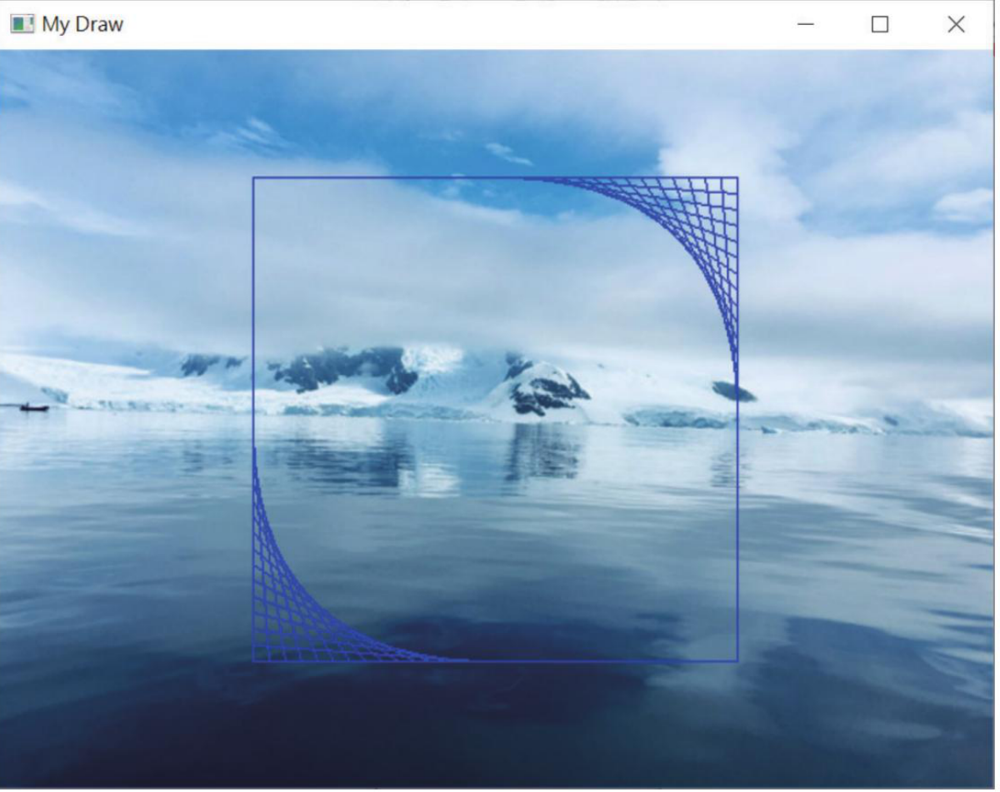
在图像中央绘制矩形，参考原书第 7-28 页。
7-5
绘制圆
cv2.circle() 使用圆心、半径、颜色和线宽绘制圆。thickness=-1 可绘制实心圆。
cv2.circle(img, center, radius, color, thickness)
程序实例 ch7_7.py：绘制同心圆
# ch7_7.py
import cv2
import numpy as np
img = np.zeros((600, 600, 3), np.uint8)
center = (300, 300)
for radius in range(50, 300, 50):
cv2.circle(img, center, radius, (0, 255, 255), 3)
cv2.circle(img, center, 20, (0, 0, 255), -1)
cv2.imshow("My Draw", img)
cv2.waitKey(0)
cv2.destroyAllWindows()
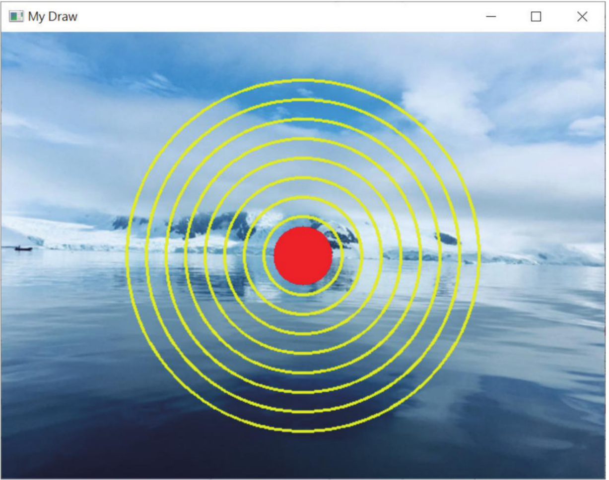
在图像画布上绘制同心圆，参考原书第 7-9 页。
程序实例 ch7_8.py：建立 3 个元素的数组
# ch7_8.py
import numpy as np
color = np.random.randint(0, 256, size=3)
print(color)
程序实例 ch7_9.py：将数组转换为 list 作为颜色值
# ch7_9.py
import numpy as np
color = np.random.randint(0, 256, size=3).tolist()
print(color)
程序实例 ch7_10.py：随机绘制 50 个实心圆
# ch7_10.py
import cv2
import numpy as np
width = 600
height = 480
img = np.zeros((height, width, 3), np.uint8)
for _ in range(50):
center = tuple(np.random.randint(0, [width, height], size=2).tolist())
radius = int(np.random.randint(10, 80))
color = np.random.randint(0, 256, size=3).tolist()
cv2.circle(img, center, radius, color, -1)
cv2.imshow("My Draw", img)
cv2.waitKey(0)
cv2.destroyAllWindows()
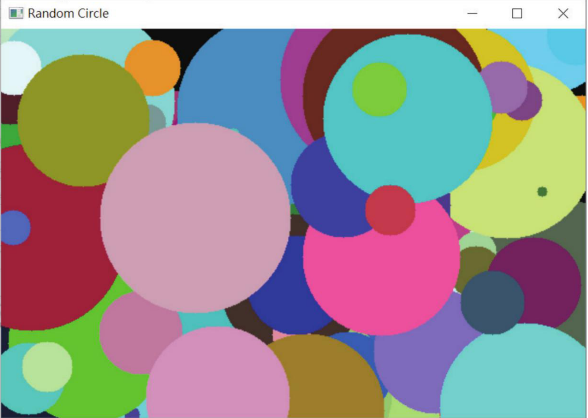
随机圆形图案，参考原书第 7-11 页。
7-6
绘制椭圆
cv2.ellipse() 使用中心点、长短轴、旋转角度、起始角度和结束角度，可以绘制完整椭圆或椭圆弧。
cv2.ellipse(img, center, axes, angle, startAngle, endAngle, color, thickness)
程序实例 ch7_11.py：绘制不同角度的椭圆
# ch7_11.py
import cv2
import numpy as np
img = np.ones((480, 600, 3), np.uint8) * 255
center = (300, 240)
cv2.ellipse(img, center, (200, 80), 0, 0, 360, (255, 0, 0), 3)
cv2.ellipse(img, center, (200, 80), 45, 0, 360, (0, 255, 0), 3)
cv2.ellipse(img, center, (200, 80), 90, 0, 360, (0, 0, 255), 3)
cv2.ellipse(img, center, (200, 80), 0, 0, 180, (0, 0, 0), 6)
cv2.imshow("My Draw", img)
cv2.waitKey(0)
cv2.destroyAllWindows()
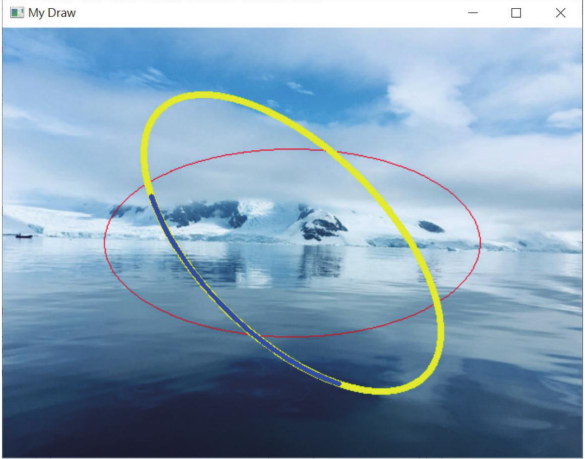
不同角度与线宽的椭圆，参考原书第 7-12 页。
程序实例 ch7_12.py：随机绘制椭圆
# ch7_12.py
import cv2
import numpy as np
width = 600
height = 480
img = np.ones((height, width, 3), np.uint8) * 255
for _ in range(20):
center = tuple(np.random.randint(0, [width, height], size=2).tolist())
axes = tuple(np.random.randint(20, 160, size=2).tolist())
angle = int(np.random.randint(0, 360))
color = np.random.randint(0, 256, size=3).tolist()
cv2.ellipse(img, center, axes, angle, 0, 360, color, 3)
cv2.imshow("My Draw", img)
cv2.waitKey(0)
cv2.destroyAllWindows()
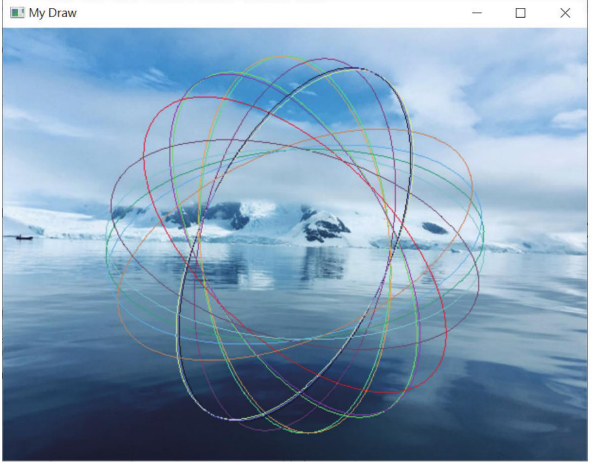
随机椭圆组成的图案，参考原书第 7-13 页。
7-7
绘制多边形
多边形需要先建立顶点数组，再传给 cv2.polylines()。isClosed 决定首尾是否闭合。
cv2.polylines(img, pts, isClosed, color, thickness)
程序实例 ch7_13.py：绘制闭合与开放多边形
# ch7_13.py
import cv2
import numpy as np
img = np.ones((320, 360, 3), np.uint8) * 255
pts = np.array([[100, 50], [200, 150], [100, 250], [20, 150]], np.int32)
pts = pts.reshape((-1, 1, 2))
cv2.polylines(img, [pts], True, (255, 0, 0), 5)
cv2.polylines(img, [pts + [120, 0]], False, (0, 0, 255), 5)
cv2.imshow("My Draw", img)
cv2.waitKey(0)
cv2.destroyAllWindows()
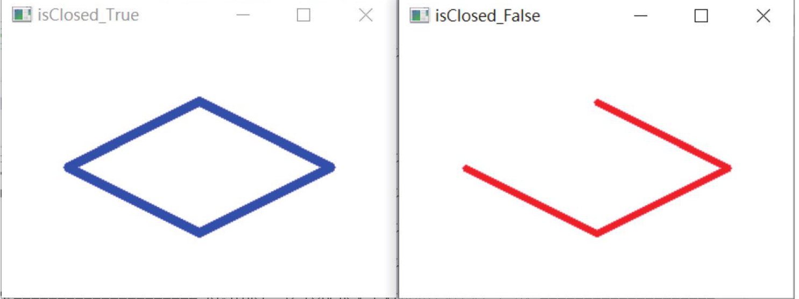
闭合与不闭合多边形，参考原书第 7-14 页。
7-8
输出文本
英文文字可用 cv2.putText() 直接输出。若要显示中文，通常需要通过 PIL 加载中文字体后再转回 OpenCV 图像。
cv2.putText(img, text, org, fontFace, fontScale, color, thickness)
程序实例 ch7_14.py：输出蓝色 Python 文字
# ch7_14.py
import cv2
import numpy as np
img = np.ones((220, 500, 3), np.uint8) * 255
cv2.putText(img, "Python", (20, 120), cv2.FONT_HERSHEY_SIMPLEX, 3, (255, 0, 0), 12)
cv2.imshow("My Draw", img)
cv2.waitKey(0)
cv2.destroyAllWindows()
程序实例 ch7_15.py：在同一位置输出描边文字
# ch7_15.py
import cv2
import numpy as np
img = np.ones((220, 500, 3), np.uint8) * 255
cv2.putText(img, "Python", (20, 120), cv2.FONT_HERSHEY_SIMPLEX, 3, (255, 0, 0), 12)
cv2.putText(img, "Python", (20, 120), cv2.FONT_HERSHEY_SIMPLEX, 3, (0, 255, 255), 3)
cv2.imshow("My Draw", img)
cv2.waitKey(0)
cv2.destroyAllWindows()
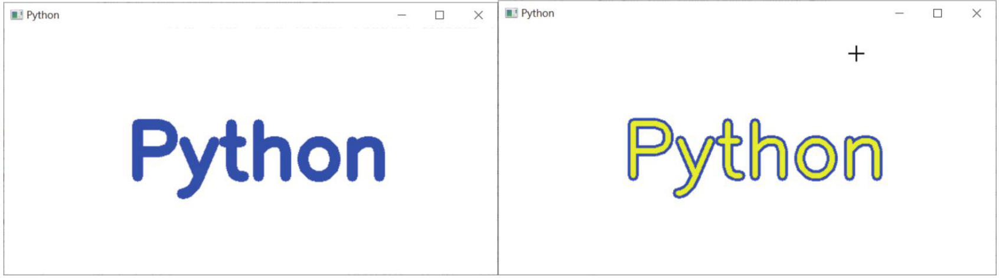
普通文字与描边文字，参考原书第 7-16 页。
程序实例 ch7_16.py：设计含倒影的文字
# ch7_16.py
import cv2
import numpy as np
img = np.ones((360, 600, 3), np.uint8) * 255
cv2.putText(img, "Python", (40, 150), cv2.FONT_HERSHEY_SIMPLEX, 3, (255, 0, 0), 12)
cv2.putText(img, "Python", (40, 150), cv2.FONT_HERSHEY_SIMPLEX, 3, (0, 255, 255), 3)
mirror = cv2.flip(img[0:180, :], 0)
img[180:360, :] = cv2.addWeighted(img[180:360, :], 0.35, mirror, 0.65, 0)
cv2.imshow("My Draw", img)
cv2.waitKey(0)
cv2.destroyAllWindows()
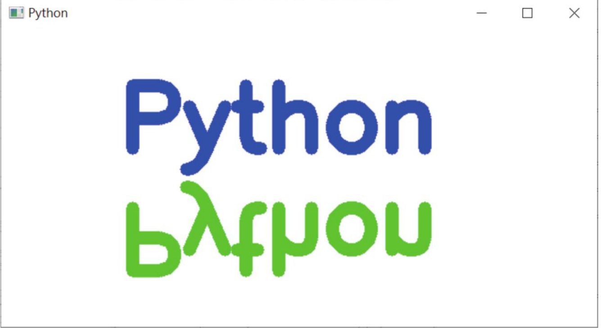
文字倒影效果，参考原书第 7-17 页。
程序实例 ch7_17.py：在图像画布上输出英文文字
# ch7_17.py
import cv2
img = cv2.imread("antarctic.jpg")
cv2.putText(img, "OpenCV", (40, 80), cv2.FONT_HERSHEY_SIMPLEX, 2, (0, 0, 255), 5)
cv2.imshow("My Draw", img)
cv2.waitKey(0)
cv2.destroyAllWindows()
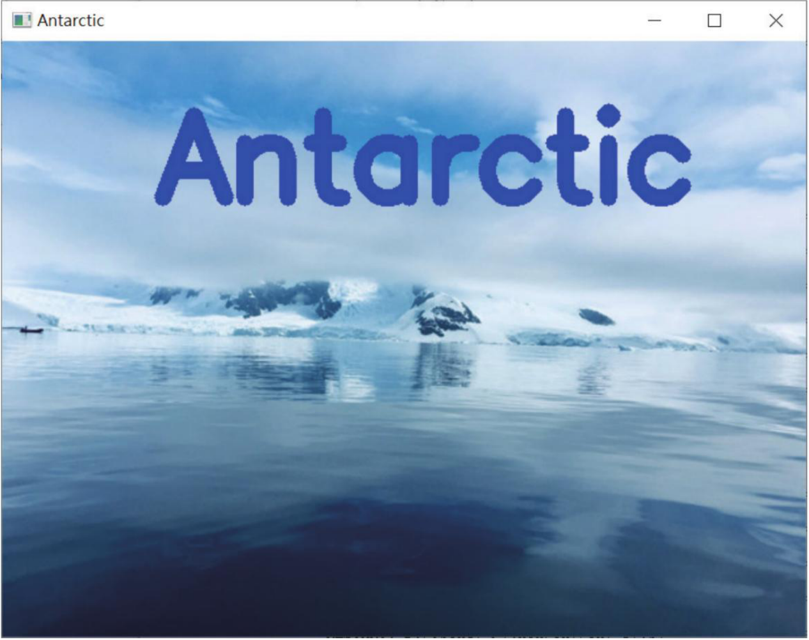
在图像上绘制英文文字，参考原书第 7-18 页。
程序实例 ch7_17_1.py：在图像画布上输出中文文字
# ch7_17_1.py
import cv2
import numpy as np
from PIL import Image, ImageDraw, ImageFont
img = cv2.imread("antarctic.jpg")
rgb = cv2.cvtColor(img, cv2.COLOR_BGR2RGB)
pil_img = Image.fromarray(rgb)
draw = ImageDraw.Draw(pil_img)
font = ImageFont.truetype("msjh.ttc", 48)
draw.text((40, 80), "南极企鹅", font=font, fill=(255, 0, 0))
img = cv2.cvtColor(np.asarray(pil_img), cv2.COLOR_RGB2BGR)
cv2.imshow("My Draw", img)
cv2.waitKey(0)
cv2.destroyAllWindows()
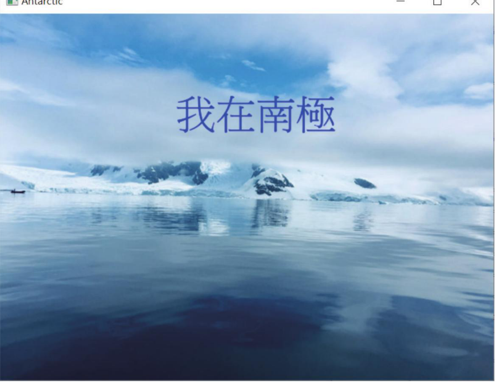
在图像上绘制中文文字，参考原书第 7-18 页。
7-9
反弹球设计
动画的基本做法是循环清空画布、更新位置、绘制物件、显示画面。碰到边界时改变速度方向即可产生反弹。
程序实例 ch7_18.py：上下反弹球
# ch7_18.py
import cv2
import numpy as np
width, height = 600, 480
x, y = 300, 50
dy = 6
radius = 30
while True:
img = np.zeros((height, width, 3), np.uint8)
cv2.circle(img, (x, y), radius, (0, 255, 255), -1)
cv2.imshow("Bouncing Ball", img)
y += dy
if y + radius >= height or y - radius <= 0:
dy = -dy
if cv2.waitKey(20) == 27:
break
cv2.destroyAllWindows()
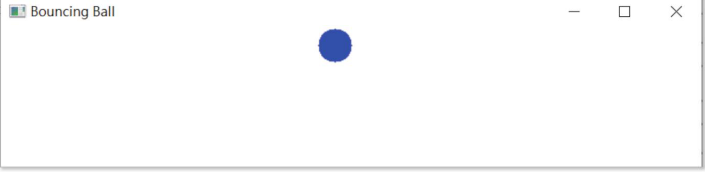
球体上下反弹示例，参考原书第 7-20 页。
程序实例 ch7_19.py：加入左右移动
# ch7_19.py 的关键差异
x, y = 50, 50
dx, dy = 4, 6
x += dx
y += dy
if x + radius >= width or x - radius <= 0:
dx = -dx
if y + radius >= height or y - radius <= 0:
dy = -dy
程序实例 ch7_20.py：让 x 方向步长随机
# ch7_20.py 的关键差异
import random
dx = random.choice([-8, -6, -4, 4, 6, 8])
dy = 6
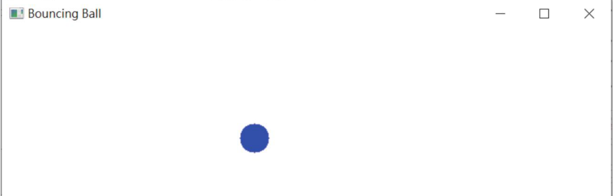
加入随机步长后的反弹效果，参考原书第 7-21 页。
7-10
鼠标事件
cv2.setMouseCallback() 可以把窗口中的鼠标动作交给回调函数处理。回调函数通常接收
event、x、y、flags、param。
cv2.setMouseCallback(windowName, callback)
程序实例 ch7_21.py：列出 OpenCV 鼠标事件名称
# ch7_21.py
import cv2
events = [name for name in dir(cv2) if name.startswith("EVENT_")]
for event in events:
print(event)
程序实例 ch7_22.py：显示鼠标事件名称和坐标
# ch7_22.py
import cv2
import numpy as np
def mouse_event(event, x, y, flags, param):
if event == cv2.EVENT_LBUTTONDOWN:
print(f"左键按下: ({x}, {y})")
elif event == cv2.EVENT_MOUSEMOVE:
print(f"鼠标移动: ({x}, {y})")
img = np.zeros((300, 500, 3), np.uint8)
cv2.namedWindow("image")
cv2.setMouseCallback("image", mouse_event)
while True:
cv2.imshow("image", img)
if cv2.waitKey(20) == 27:
break
cv2.destroyAllWindows()
程序实例 ch7_23.py：鼠标左键生成随机实心圆
# ch7_23.py
import cv2
import numpy as np
img = np.zeros((480, 600, 3), np.uint8)
def draw_circle(event, x, y, flags, param):
if event == cv2.EVENT_LBUTTONDOWN:
radius = int(np.random.randint(10, 60))
color = np.random.randint(0, 256, size=3).tolist()
cv2.circle(img, (x, y), radius, color, -1)
cv2.namedWindow("image")
cv2.setMouseCallback("image", draw_circle)
while True:
cv2.imshow("image", img)
if cv2.waitKey(20) == 27:
break
cv2.destroyAllWindows()
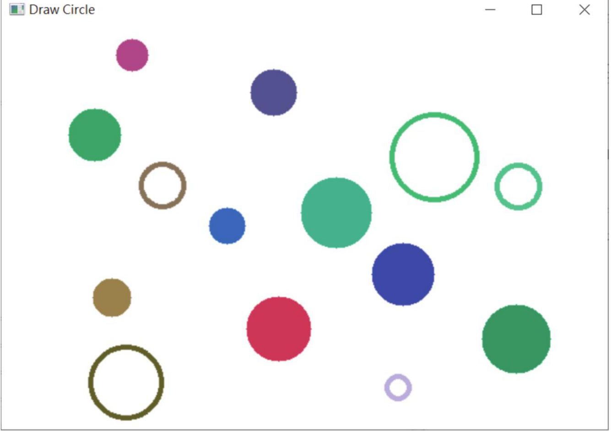
鼠标点击生成随机圆，参考原书第 7-24 页。
程序实例 ch7_24.py：鼠标与键盘组合绘制不同图形
# ch7_24.py
import cv2
import numpy as np
img = np.zeros((480, 600, 3), np.uint8)
mode = "circle"
def draw_shape(event, x, y, flags, param):
global mode
if event == cv2.EVENT_LBUTTONDOWN:
color = np.random.randint(0, 256, size=3).tolist()
if mode == "circle":
cv2.circle(img, (x, y), 35, color, -1)
else:
cv2.rectangle(img, (x - 35, y - 35), (x + 35, y + 35), color, -1)
cv2.namedWindow("image")
cv2.setMouseCallback("image", draw_shape)
while True:
cv2.imshow("image", img)
key = cv2.waitKey(20)
if key == ord("m"):
mode = "rect" if mode == "circle" else "circle"
if key == 27:
break
cv2.destroyAllWindows()
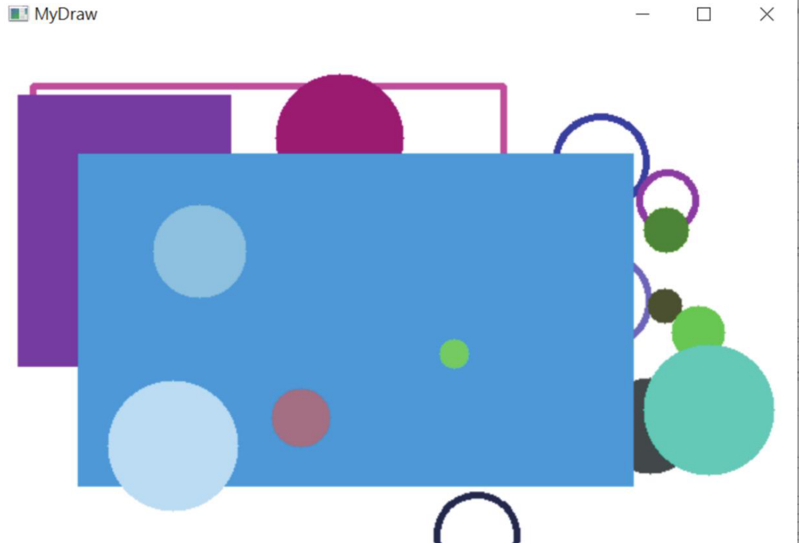
鼠标与键盘组合绘制不同图形，参考原书第 7-25 页。
7-11
滚动条设计
Trackbar 可以让用户在窗口中调整数值。原书示例用 3 个滚动条控制 B、G、R，从而实时改变画布背景色。
cv2.createTrackbar(trackbarName, windowName, value, count, onChange)
程序实例 ch7_25.py：使用 3 个滚动条设计背景颜色
# ch7_25.py
import cv2
import numpy as np
def nothing(x):
pass
img = np.zeros((300, 500, 3), np.uint8)
cv2.namedWindow("image")
cv2.createTrackbar("B", "image", 0, 255, nothing)
cv2.createTrackbar("G", "image", 0, 255, nothing)
cv2.createTrackbar("R", "image", 0, 255, nothing)
while True:
b = cv2.getTrackbarPos("B", "image")
g = cv2.getTrackbarPos("G", "image")
r = cv2.getTrackbarPos("R", "image")
img[:] = [b, g, r]
cv2.imshow("image", img)
if cv2.waitKey(20) == 27:
break
cv2.destroyAllWindows()
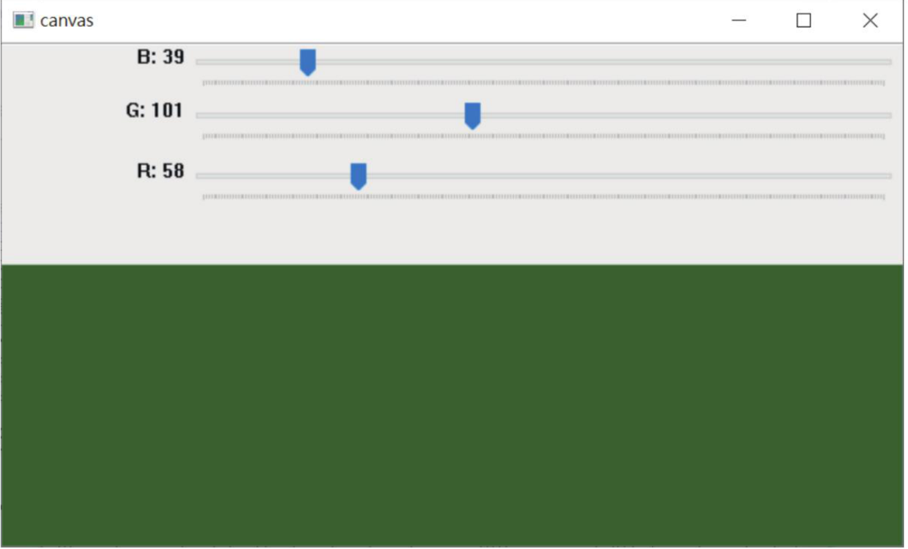
用 trackbar 调整颜色，参考原书第 7-26 页。
7-12
滚动条开关应用
Trackbar 也可以当开关使用。原书示例用一个开关决定是否绘制圆，并用另一个滚动条控制线宽。
程序实例 ch7_26.py：滚动条开关控制绘图
# ch7_26.py
import cv2
import numpy as np
def nothing(x):
pass
img = np.zeros((360, 600, 3), np.uint8)
cv2.namedWindow("image")
cv2.createTrackbar("switch", "image", 0, 1, nothing)
cv2.createTrackbar("thickness", "image", 1, 20, nothing)
while True:
canvas = img.copy()
sw = cv2.getTrackbarPos("switch", "image")
thickness = cv2.getTrackbarPos("thickness", "image")
if sw == 1:
cv2.circle(canvas, (300, 180), 100, (0, 255, 255), max(thickness, 1))
cv2.imshow("image", canvas)
if cv2.waitKey(20) == 27:
break
cv2.destroyAllWindows()
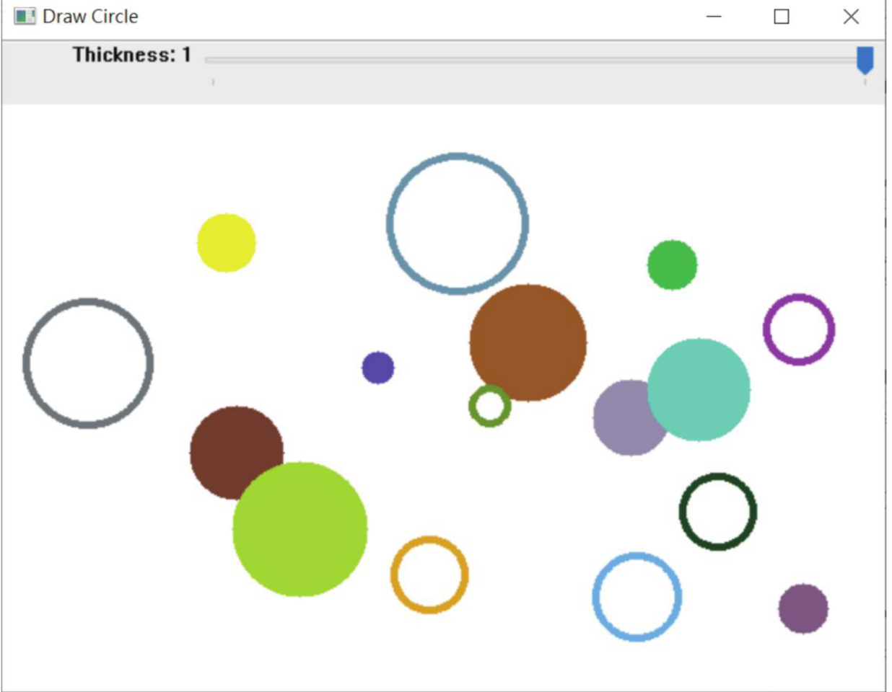
滚动条控制绘图开关与粗细，参考原书第 7-27 页。
1：修订 ch7_4.py，将所绘制的矩形置中。
2：修订 ch7_12.py，在 width=600、height=480 的白色画布中绘制 20 条不同线条宽度的随机椭圆。
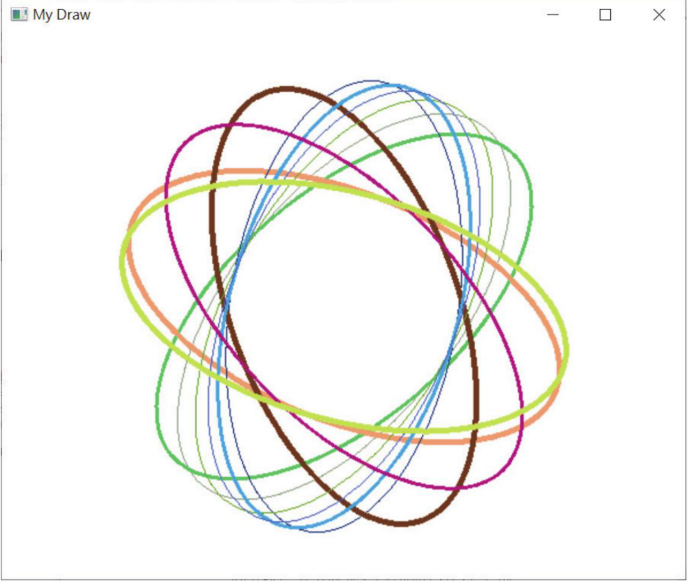
随机椭圆参考效果，参考原书第 7-29 页。
3：修订 ch7_23.py，产生矩形，宽度与高度也随机产生。
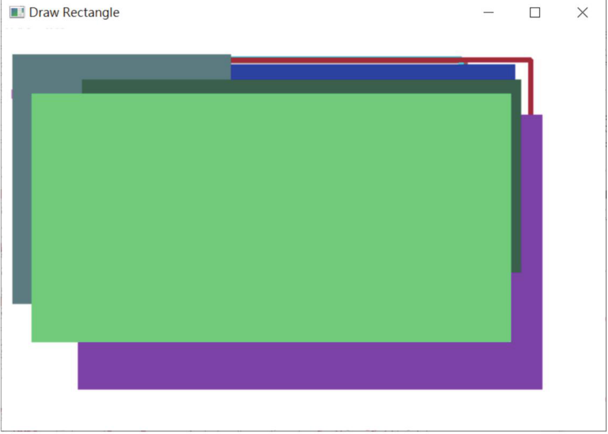
随机矩形参考效果，参考原书第 7-29 页。